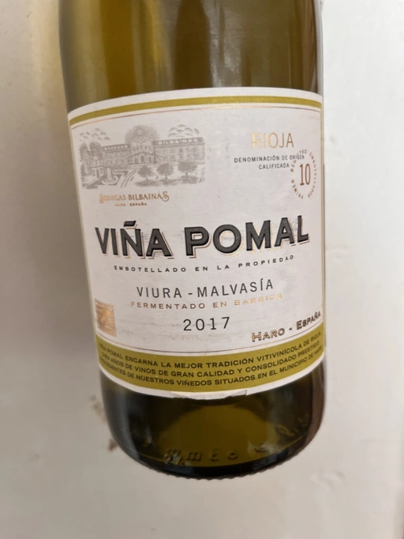

- Type
- White Still, Dry
- Producer
- Viña Pomal
- Vintage
- 2017
- Location
- Spain, Rioja DOC
- Grapes
- Macabeo, Malvasia di Candia Aromatica
- Alcohol
- 12.5
- Sugar
- NA
- Price
- 690 UAH
- Cellar
- N/A
Producer
Many Haro bodegas were created by people fleeing from the ravages of phyloxera. Bodegas Bilbaínas is no exception, its origins go back to 1859, when Savignon Frères & Cie set up in Haro. Though the company was created only in 1901. How is it related to Viña Pomal? Well, it is a creation of Don Santiago de Ugarte, co-founder of Bodegas Bilbaínas and the company’s first Managing Director. Their first released vintage is 1904.
Ratings
2022-06-24 - 7.50
One of those brands I avoided for a long time, but then life settled everything for us to meet. Am I happy? Why, of course, it’s wine and not a bad one! Will I pursue another meeting? No, I have not fell in love. Good aromatic barrel aged Rioja blend of Viura (Macabeo) and Malvasia. Think of white flowers, green fruits, fennel, and toast notes. It has a firm and slightly oily structure, and a long aftertaste with flavours of fennel and green fruits. Nice.